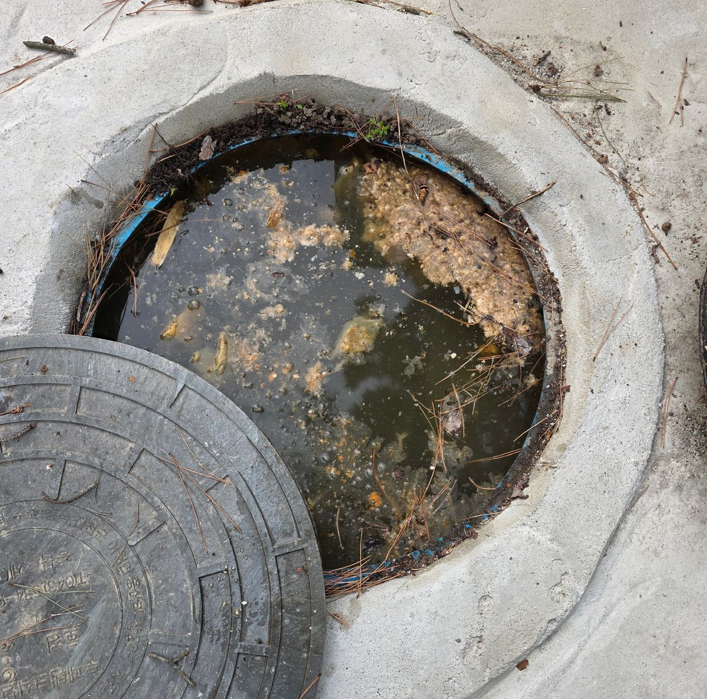
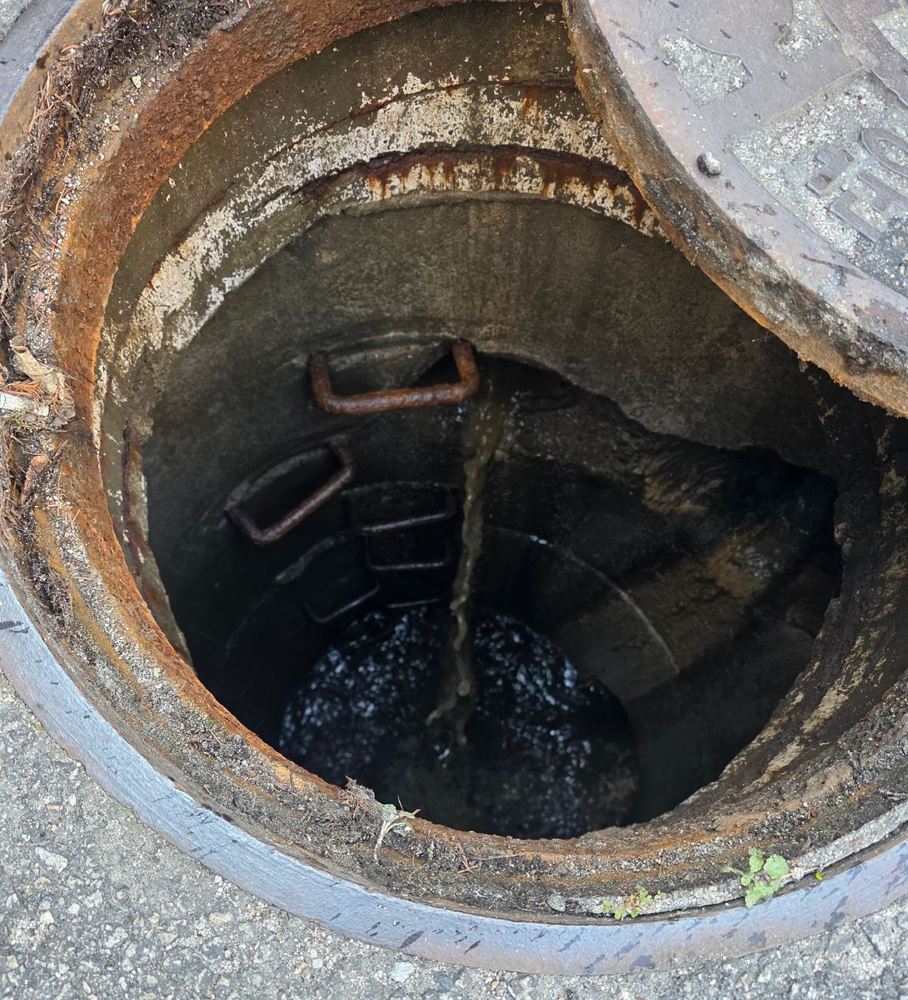

청년배관
배관 벽에 눌어붙은 기름과 슬러지는 뚫어도 그대로 남습니다.
벽까지 씻어내야 같은 자리가 다시 막히지 않습니다.
기름때가 두꺼워 잘 안 뚫리니 스프링을 사서 직접 해보시는 사장님이 많습니다.
그런데 스프링이 배관 안에서 걸리면 배관을 뜯어내는 공사가 됩니다.
배관이 꺾이는 자리(엘보)에서 특히 잘 걸립니다. 그리고 기름때가 두꺼운 배관일수록
스프링이 되돌아 나오기 어렵습니다. 영업을 며칠 쉬어야 하는 상황까지 갑니다.

작업 전
작업 후